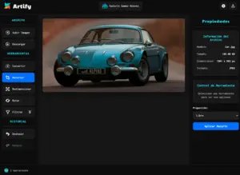
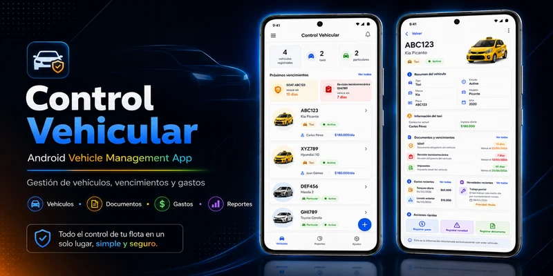
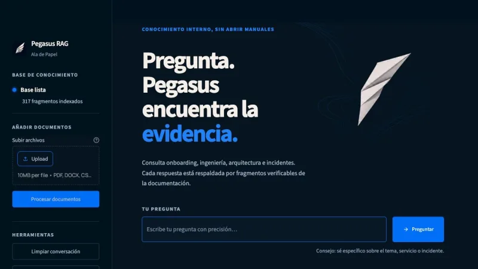
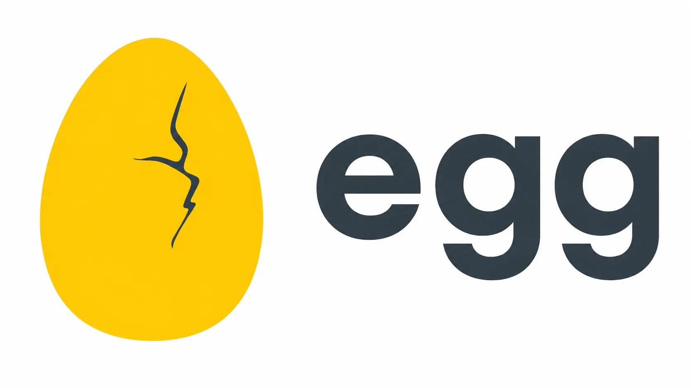
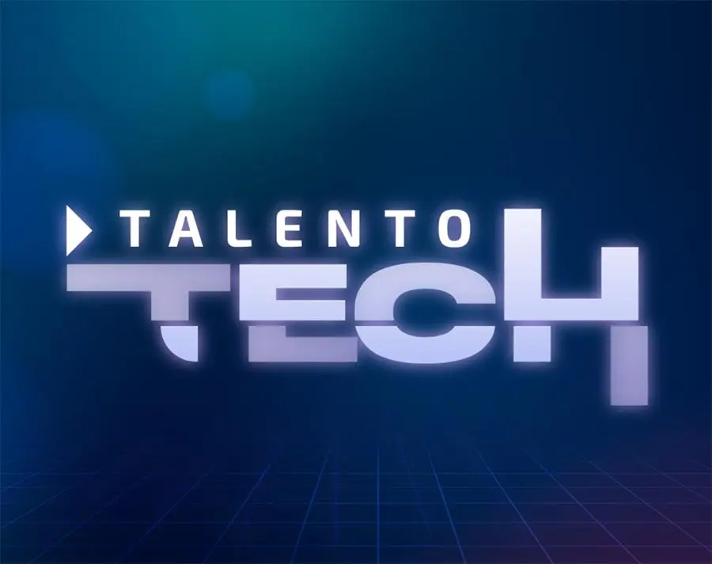

Sitios web
Landing pages y sitios responsive con estructura clara, buen rendimiento y presentación profesional.
Desarrollador de software
Valledupar, Colombia
Soy desarrollador de software enfocado en desarrollo web. Construyo interfaces y aplicaciones con HTML, CSS y JavaScript, y desarrollo funcionalidades backend y APIs REST con Node.js, Express y PostgreSQL. Me interesa crear soluciones claras, responsive y fáciles de mantener. También cuento con experiencia complementaria desarrollando aplicaciones Android con Kotlin y proyectos de inteligencia artificial aplicada con Python.
Landing pages y sitios responsive con estructura clara, buen rendimiento y presentación profesional.
Interfaces con HTML, CSS y JavaScript, incluyendo formularios, validaciones y funcionalidades dinámicas.
Aplicaciones enfocadas en necesidades concretas, conectando frontend, backend y base de datos cuando el proyecto lo requiere.
APIs REST con Node.js y Express, integración con PostgreSQL y organización básica de datos.
Corrección de errores, ajustes responsive, mejoras de contenido y mantenimiento de sitios o aplicaciones existentes.
Aplicación web full stack para edición de imágenes. Permite usar filtros, recorte, redimensionamiento, conversión de formatos e historial con Canvas API. Incluye backend con Node.js y Express, API REST, autenticación y autorización por roles, panel administrativo y persistencia en PostgreSQL.

Aplicación Android para administrar vehículos particulares y taxis. Permite gestionar gastos, novedades, documentos, vencimientos, historial por vehículo y reportes básicos con persistencia local.

Asistente de inteligencia artificial desarrollado para el Challenge de Oracle + Alura. Permite consultar documentación empresarial en lenguaje natural, recupera evidencia relevante y muestra las fuentes utilizadas en cada respuesta.

HTML
CSS
JavaScript
Node.js
Express
PostgreSQL
Kotlin
Jetpack Compose
Python
RAG
Tecnólogo en Análisis y Desarrollo de Software. Formación enfocada en análisis de requerimientos, programación, bases de datos y buenas prácticas para construir soluciones de software.
Formación práctica en desarrollo web con HTML, CSS y JavaScript, enfocada en crear interfaces y aplicar fundamentos del frontend.

Bootcamp de Programación Básico, con una duración de 159 horas y orientado a fortalecer fundamentos de programación, lógica y desarrollo de soluciones digitales.

Bootcamp de Inteligencia Artificial Nivel Básico, con una duración de 159 horas y enfocado en fundamentos para desarrollar soluciones digitales apoyadas en IA.